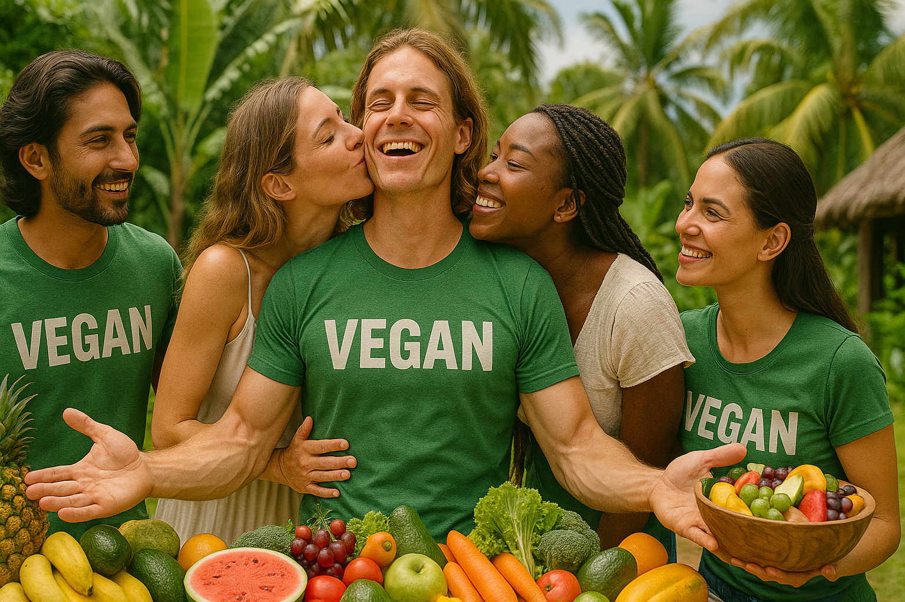

Benefits of Switching to Vegan Protein
Switching your scoop from animal to vegan protein rewires more than your blender routine. Harvard’s Nurses’ Health Study tracked over 130,000 people and found that trading just 3% of daily calories from red meat for plant protein cut overall mortality by 10% and cardiovascular deaths by 12%. *
Kidneys cheer for the swap too. A 2020 clinical review reported animal protein raises dietary acid load and phosphorus—two drivers of chronic kidney disease—while plant protein lowers those pressures and slows decline in glomerular filtration rate. *
Your arteries win another round because plant powders arrive almost fat-free and completely free of the heme iron and carnitine that gut microbes convert into atherogenic TMAO. A BMJ review linked higher plant-protein diets to 8% lower all-cause mortality and 12% fewer heart-disease deaths. *
The planet enjoys a side benefit. A 2023 life-cycle review found pea and faba-bean concentrates emit under 5 kg CO₂ per kg protein—roughly one-tenth the footprint of whey—while using a fraction of land and water. *
Digestion often improves because pea-rice blends ditch lactose and sidestep FODMAPs. Monash University lists certified low-FODMAP pea isolates that keep fermentable carbs near zero, a lifesaver for IBS. *
Allergies fall off the radar: dairy is a top-8 allergen, but pea or rice protein allergies are vanishingly rare—ideal for schools and teams.
Ready to make the jump? Orgain Organic Plant-Based Protein Powder delivers 21 g pea-rice protein with a milkshake finish. Purists can grab Naked Pea Protein: 27 g per scoop, third-party heavy-metal tested, and a carbon footprint your step counter could outpace.
Bottom line: swapping to vegan protein trims saturated fat, eases kidney strain, cuts carbon emissions, and keeps digestion calm—all while matching whey for muscle growth when total protein and leucine stay high.